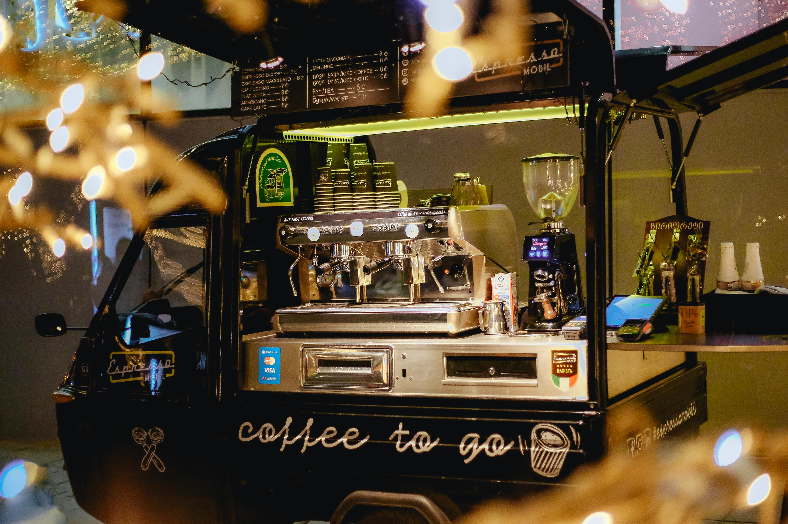

OUR STORY
 Five years ago, The Green Bean began as a humble food truck parked on a tree-lined street, serving freshly brewed coffee and locally baked pastries to early risers and curious passersby. Word quickly spread about the truck’s smooth cold brew, warm smiles, and signature pistachio latte, building a loyal following that grew with each passing month. What started as a mobile dream has since transformed into a cozy brick-and-mortar café nestled in the heart of the community, where sunlight streams through green-tinted windows and the aroma of roasted beans lingers in the air. Today, The Green Bean is more than just a coffee shop—it’s a neighborhood staple built on passion, persistence, and a whole lot of caffeine.
OUR MISSION
At The Green Bean, our mission is to brew exceptional coffee and foster genuine community by creating a warm, welcoming space where everyone feels at home.
-Jeff Smith, founder and owner of The Green Bean
 At The Green Bean, we believe that great coffee starts with great relationships—and that begins at the source. Our beans are ethically sourced from small, family-run farms in Colombia, Ethiopia, and Guatemala, where generations of growers have perfected their craft in rich, high-altitude soil. We work with trusted importers who ensure fair prices and sustainable practices, allowing us to bring you beans that are not only flavorful, but also responsibly grown. Each origin brings its own unique notes—from the bright citrus of Ethiopian heirloom varietals to the chocolatey depth of Guatemalan harvests—and we carefully roast in small batches to highlight their natural character.
At The Green Bean, we believe that great coffee starts with great relationships—and that begins at the source. Our beans are ethically sourced from small, family-run farms in Colombia, Ethiopia, and Guatemala, where generations of growers have perfected their craft in rich, high-altitude soil. We work with trusted importers who ensure fair prices and sustainable practices, allowing us to bring you beans that are not only flavorful, but also responsibly grown. Each origin brings its own unique notes—from the bright citrus of Ethiopian heirloom varietals to the chocolatey depth of Guatemalan harvests—and we carefully roast in small batches to highlight their natural character.
What makes our coffee special isn’t just the quality of the beans, but the care and transparency behind every cup. We regularly feature single-origin offerings and share stories from the farmers who make our work possible, helping you feel more connected to what’s in your mug. When you sip a latte or cold brew at The Green Bean, you’re tasting more than just coffee—you’re supporting a global community rooted in craftsmanship, sustainability, and heart.